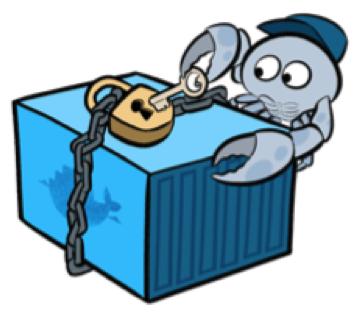

Docker Security
Jefferson Souza
Programador PHP a 7 anos, participante da comunidade Carioca de desenvolvedores PHP.
Gosto de estar por dentro de novas tecnologias e de soluções que agilizem o desenvolvimento e otimize a performance.
Segurança
Dicas
Itens básicos para ajudar na segurança Global
Sempre utilize um usuário para a sua aplicação
Você pode definir o usuário passando o parâmetro -u ao criar o seu container.
docker run -dit --name="myapp" -u user:group myappPara mais informações, visite o manifesto: https://benchmarks.cisecurity.org/tools2/docker/CIS_Docker_1.11.0_Benchmark_v1.0.0.pdf
Ferramentas
Docker Bench
https://github.com/docker/docker-bench-security

Utilize para a verificação de vulnerabilidades no docker
Docker Security Check
https://docs.docker.com/docker-cloud/builds/image-scan

Verificação de vulnerabilidades para Container
Clair
https://github.com/coreos/clair
Verificação de vulnerabilidades para Container
Logs
Os logs são parte importante e podem dizer bastante na hora de viabilizar informações sobre segurança